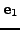
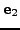
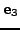
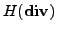

We propose a new technique based on element agglomeration for constructing coarse subspaces of the lowest order tetrahedral Raviart-Thomas finite element spaces. The coarse spaces are spanned by local basis functions associated with each agglomerated face (i.e., interface between two agglomerated elements). Each such face is associated with up to 4 coarse shape functions. The support of these functions extends into the neighboring agglomerated elements and their construction involves the solution of certain local mixed finite element problem on each neighboring agglomerated element. In contrast to a previous work, the thus constructed coarse subspace exhibits certain approximation properties due to the fact that it contains (i.e., interpolates exactly) the global coordinate vector constants , ,  and the global position vector . Our construction is general; in particular, we do not assume that the agglomerated faces are planar. Possible applications of the coarse Raviart-Thomas spaces are in constructing multigrid methods for  bilinear forms, and (based on the approximation properties of these spaces) in upscaling of mixed formulation of diffusion problems. We provide some preliminary numerical examples.